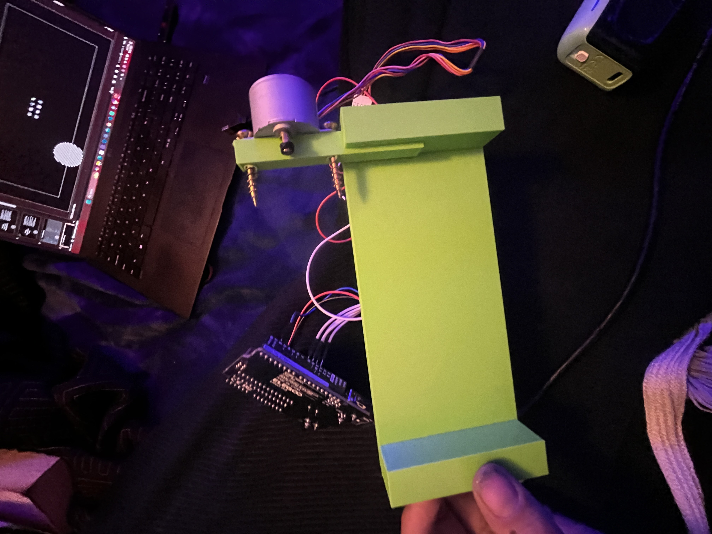

Automated Page Turner
Embedded systems + mechanical design focused on reliable single-page turning.

Overview
The Automated Page Turner is a motorized assistive device designed to turn book pages through controlled mechanical actuation. The system integrates embedded control with physical design to produce a repeatable and reliable motion.
How This Meets the Objective
This project demonstrates applied problem-solving and embedded systems integration by addressing the challenge of reliably turning a single page. The system required coordination between motor control, mechanical design, and user input, with multiple iterations to refine consistency and accuracy. Through testing and redesign, the system was improved under real-world constraints, showcasing iterative engineering development.
Key Contributions
- Designed motor-driven page turning mechanism
- Integrated ESP32-based control system
- Refined mechanical design through iteration
- Tested and validated real-world performance